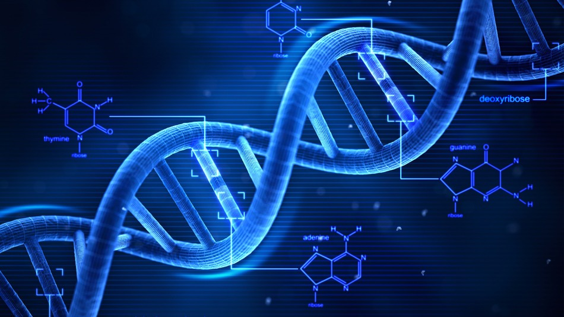

Hallo Titel
A Paragraph
Halllo allemaal! Deze website gaat over een zoekmachine en een visualitatietool die helpt bij het zoeken naar toxische stoffen. Doordat dit met allerlei tools kan, hoeven er geen onschuldige dieren voor gedood te worden. Immers is er veel bekend over allerlei stoffen, er wordt veel gepubliceerd erover. Maar omdit allemaal door te lezen, is een onmogelijke taak. Daarom hebben wij ToxiApp ontwikkeld. Met behulp van ToxiApp kan je snel zoeken naar toxische stoffen en dit ook laten visualiseren.